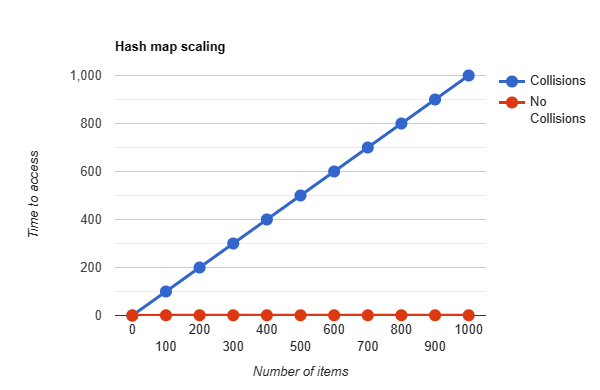
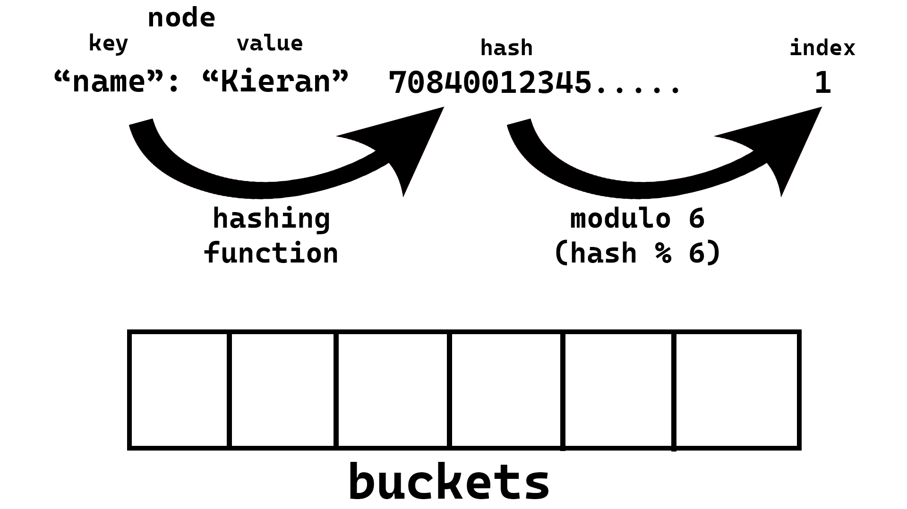
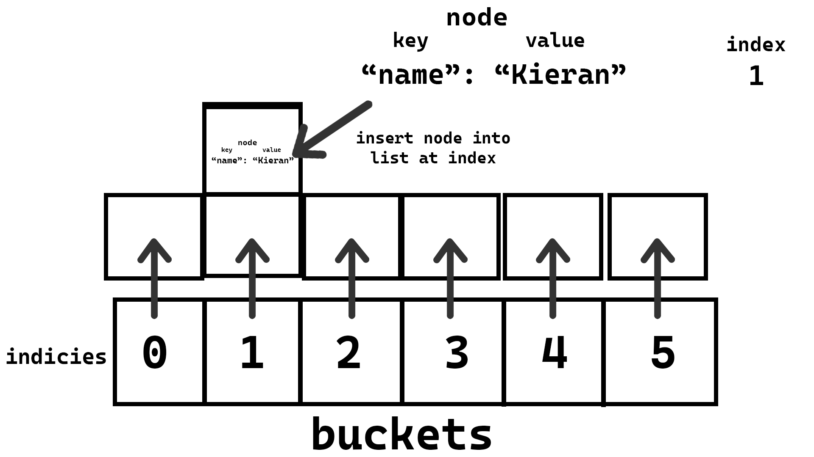

Hashing is a process where you take some sort of input data and use a hashing algorithm map it to some sort of output data (called a hash). This output data should be deterministic, meaning for each input there should be 1 output when put through our hashing algorithm. Also it should be 1-way, meaning unlike encryption or compression where we want to be able to get the original value for hashing we only want to create an output from an input, but we do not want to be able to get the input from the output. Ideally in most cases you also want something that returns a fixed-size output, so no matter how big your input is you always get the same length output.
So to recap hash functions should:
- Have 1 output for each input (deterministic) and ideally unique (see hash collisions)
- Able to get output from input, but not input from output (one-way)
- Should return outputs of the same length (Fixed-size output); Not required but nice to have
So let’s say we have a hashing algorithm called hash(). When we call hash() with the text kieran (hash("kieran)) we get back the hash 3617183895572154872. The important thing is that when we call hash("kieran") again we should get 3617183895572154872 again. In other words for the same input, we should always get the same output, and ideally the output for each input should be unique.
Uses
There are far too many uses for hashes to cover them all here (blockchains, git/vcs, cache invalidation etc.), but I have included a few common ones.
Integrity Hashes
When you’re downloading a file from the internet you are fundamentally getting it from a network. How do you know that someone has not replaced the original file in transit to your device? How do you know the image your downloading isn’t actually some malicious code? One way to check is with integrity hashes.
Integrity hashes have been around for a while, on the early days of the internet md5 file hashes were common to see on websites you donwloaded software from. Even though security has gotten better since the 2000’s it’s still a concerning prospect that you might be downloading unsafe files. The most concerning of these are files you don’t even choose to download.
When you run javascript on a webpage you often first have to download the file from somewhere. Typically this is done by including a URL in the src attribute of a script tag. Let’s say for example our file is hosted on https://schulichignite.com/file.js we could do:
<script src="https://schulichignite.com/file.js"></script>Well, if we put on our hacking black fedora’s and trench-coats there is a clear way for someone malicious to inject code into this. All they have to do is convince your computer (or any of the computers your computer connects to), that whatever malicious code they want to run is at the URL.
There are more involved methods of doing this like stealing peoples passwords and uploading malicious code, or hacking into a server etc. The method isn’t important, the point is that when we ask https://schulichignite.com/file.js for the file we have no way to make sure we are getting what we want. These attacks are often called CDN-poisioning or cache-poisioning. It feeds off a problem of authority. I can’t trust schulichignite.com and the only validation I can get that the code is correct is from schulichignite.com. Sort of like asking a theif if they took something, and just hoping they tell the truth. So the question as developers is how do we provide something to authenticate the file that works in HTML?
Well, with our knowledge of hashes we can use a built-in attribute called subresource integrity to add integrity hashes to our javascript. All we do is include an integrity attribute that tells the browser which hash function to use (in our case SHA-1) and then the hash. For example:
<script src="https://schulichignite.com/file.js" integrity="sha1-865cd55417af5a27ab17ae1fff7510c7acc4f250" crossorigin="anonymous"></script>Now when the browser downloads the file it will run the contents as a string through the SHA-1 hashing algorithm, then check against 865cd55417af5a27ab17ae1fff7510c7acc4f250, and only run it if it matches.
Passwords
Storing people’s passwords in plain text is bad. Imagine someone were to read your database and it had information like this:
| name | password | |
|---|---|---|
| Kieran | kieran@canadiancoding.ca | me_name_is_not_kieran |
| Jamie | jamie@hotmail.co.uk | whiskers_is_life23 |
| Paul | paul@zmail.gov | P455W0RD |
Kieran and Jamie both don’t deserve their password stolen (paul might with a password like that), so how do we make it so even if people get access to your database through a hack, or an annoyed ex-employee that your users are safe? Well a password only matters in order for us to know if someone should be allowed to login. So instead of storing the password we let the user type in their password and we just store the hash, since they can then use the same password to generate the same hash and login! and we have the bonus of storing information that is useless to hackers (assuming they can’t reverse the hash). So instead with our original database we get:
| name | password | |
|---|---|---|
| Kieran | kieran@canadiancoding.ca | 3940687576951907022 |
| Jamie | jamie@hotmail.co.uk | 6922927947780301451 |
| Paul | paul@zmail.gov | P455W0RD |
(Paul’s password doesn’t get hashed because he should feel bad about how bad his password is)
Salting & peppering
One very easy to implement way of breaking up common hash collisions for passwords (and other uses) is to add salting. Salting is just adding characters to the end of an input. So for example if we have the input "mypassword" and the salt "+_()*&^%$#@!" then we would hash using hash("mypassword+_()*&^%$#@!"). This way if something like "hello123" used to collide with "mypassword" then it does not imply hash("mypassword+_()*&^%$#@!") == hash("hello123+_()*&^%$#@!") (in most common hash functions).
Peppering is the same idea except you add the pepper to the front of the text, and apply it before the salting. So if you have the pepper "!@#$%^&*()_+", then with the salt above and the same password as above you would do hash("!@#$%^&*()_+mypassword+_()*&^%$#@!").
Hash Collisions
Let’s say we have a hash function that takes in some text, converts each letter to an integer using an ASCII table, and then sums them to give you a hash. For this function any set of letters that are the same would give you the same hash. So if we called the function ASCII_Hash() then ASCII_Hash('xyz') == ASCII_Hash('yzx') == ASCII_Hash('zyx'). These situations where different results provide the same hash are called hash collisions.
Hash collisions are a big problem especially for hashmaps and integrity hashes. It is quite common to have collisions in hash maps, when this happens it means that items that are collided and end up further down the linked list are slower to access. If we had a hashmap that used ASCII_Hash() if we inserted values with the keys 'xyz','yzx','zyx' in that order, then to access the value of zyx we would first have to hash zyx, and then check xyz, then yzx, then finally find it at zyx. These performance hits can cause real problems. In algorithmic complexity notation we go from a constant time (O(1), which is a fancy way to say it takes as long as the hash function takes), to a linear time (O(n), where n is the number of elements that collide, meaning for every colliding element we go up by n * time taken to run). This difference means our hash tables scale horribly over time:

(time to run is measured in how long it takes to access each element in the linked list)
This opens up tons of problems like general slowdowns and even denial of service (DOS) attacks, where if you know enough collisions you can keep creating more and more collisions to crash a python server.
Integrity hashes are even worse. Hash collisions in integrity hashes are very dangerous. What they imply is that your method of validating something is what it says it is can work for something that isn’t what you were looking for. Similar to having a security guard that lets in every person named dave because you forgot to specify which dave you wanted to let in. There are tools designed to help generate these collisions, and if someone manages to find a collision and inject malicious code into a file, while you confirm it as “safe” it can cause big issues.
Passwords can also have huge issues with hash collisions. Remember what I said about someone being able to hack into a database and just see the hashes. Well if they can create hash collisions then they can access someones account without needing their password. They just need to guess the hash algorithm you’re using, know the hash they’re targetting, and if they can create a password that matches the hash then they can get into the account!
Hash-based Data structures
Hashmaps/dictionaries/hashtables are a common datastructure that allow you to create key-value pairs. This is what runs behind the scenes for many JSON implementations. So with a JSON file like:
{
"name":"kieran",
}In this case name is our key, and kieran is our value. From here there are 2 classes/structs we will need a Node and a HashTable. In pseudocode they would look like this:
class Node:
key: str
value: any
class HashTable:
buckets: List[List[Node]]
A node will be where we store the key-value pair, which will then be placed into our buckets list/Array. We also need to decide how many buckets we want, for now we will arbitrarily pick 6 (because it makes the drawings easier 😉) but we will discuss what more or less buckets does shortly. The basic idea is that we will use a hashing function to generate an index location in the buckets list, we will then insert the node at that index in the buckets list. This means that for searching later we can skip searching all values in any of the other buckets!
So the insertion would take the steps:
- Create
HashTablewith 6 empty buckets - Take the key you want to insert and hash it with some algorithm (make sure resulting hash is just numbers)
- Take that hash and modulo (divide by and take the remainder) it by the number of buckets (in our case 6)
- Create a node which contains the value and the key
- Insert the node into the index you calculated from the key
Steps 1-4:

Step 5:

Here is what inserting would look like in pseudocode:
ht = HashTable([[],[],[],[],[],[]]) # 1. Create HashTable with 6 empty buckets
function insert_into_hash_table(ht:HashTable, key:str, value: Any):
# 2. Take the key you want to insert and hash it with some algorithm (make sure resulting hash is just numbers)
hashed_key = hash(key)
# 3. Take that hash and modulo (divide by and take the remainder) it by the number of buckets (in our case 6)
index = int(hashed_key % 6)
# 4. Create a node which contains the value and the key
new_node = Node(key, value)
# 5. Insert the node into the index you calculated from the key
ht.buckets[index].insert(new_node)
The reason why this is handy is because compared to a normal list of every value we do the hash function first (which is fast), then we only have to search the bucket from the index we generated! So the basic algorithm for searching would be:
- Take the key you want to find and hash it with some algorithm (make sure resulting hash is just numbers)
- Take that hash and modulo (divide by and take the remainder) it by the number of buckets (in our case 6)
- Look into the
HashTableat the given index, if list at index is empty throw an error, if not then go through the list at that index and check each node in the list until you find one with the same key, if you hit the end of the list then throw an error
The pseudocode would look like:
function search_hash_table(ht:HashTable, key:str):
# 1. Take the key you want to insert and hash it with some algorithm (make sure resulting hash is just numbers)
hashed_key = hash(key)
# 2. Take that hash and modulo (divide by and take the remainder) it by the number of buckets (in our case 6)
index = int(hashed_key % 6)
# 3. Look into the `HashTable` at the given index
## 3.1 Check if index list is empty
if length(ht.buckets[index]) == 0:
raise Error("Key not in HashTable")
## 3.2 go through the list at that index and check each node in the list until you find one with the same key
for node in ht.buckets[index]:
if node.key == key:
return node.value
## 3.3 You reached the end of the list without finding the key
raise Error("Key not in HashTable")
On the positive side this means if we have a large collection of buckets and our hashes are mostly unique we can skip a ton of values while searching!
But on the negative side keep in mind that every bucket that isn’t being used is wasting memory with an empty list, so be careful what number of buckets you choose. Also keep in mind that collisions will cause the same index to be used, which means every collision makes the efficiency of looking up the node you are adding go down.
Hashability
Python (and lots of languages), will only allow you to hash certain data types. Specifically each data type will have a built in hash function, which defines how that data type should be hashed. In python since all data types are classes, this means that the class must have a __hash__() method. In lots of cases in different languages this ends up being only applicable to immutable data types.
An immutable data type is a type of data that cannot be changed. For example tuples have their data set in stone, you cannot append or modify them without reassigning the variable set to a tuple to a new value. For example with tuple’s to add a value “to a tuple” we would create a new tuple with the same values, and our new value in it. This concept gets complicated in python, but the most important weird situation is that lists are not able to be keys in any dictionaries/hashmaps because the built-in __hash__() function does not work on it. There are several reasons for this, but the main one is that you can mutate the data such as appending and popping items from the list (this article explains in more details why).
Common hashing algorithms
General Hashing:
- SHA (very common, somewhat secure, very fast)
- Wikipedia page
- How SHA-1 Works (Brilliant)
- How SHA (Secure Hash Algorithm) works? by Marcello Faria
- How Does SHA-1 Work - Intro to Cryptographic Hash Functions and SHA-1
- SHA 256 | SHA 256 Algorithm Explanation | How SHA 256 Algorithm Works | Cryptography | Simplilearn
- SHA-256 | COMPLETE Step-By-Step Explanation (W/ Example)
- SHA: Secure Hashing Algorithm - Computerphile
- MD5 (not very secure, but very very fast)
For passwords there are more involved hashing algorithms you can look into. These algorithms are designed to take a while to compute, the reason you want this is to avoid brute force attacks (video version here). These are not great for long sets of data because of how slow they are:
- Bcrypt
- PBKDF2